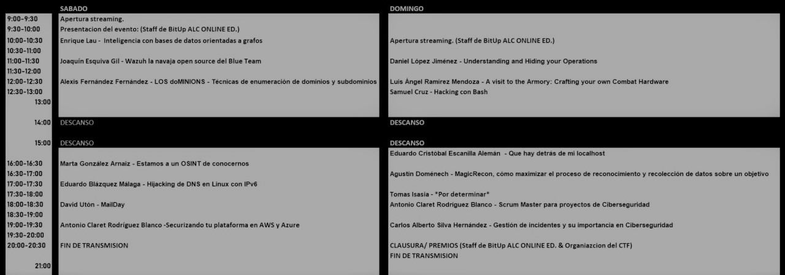

bienvenidos
En 2019 empecé el Grado Superior de Administración de
sistemas informáticos en red en el Colegio Don Bosco en Villamuriel de Cerrato,
Palencia. Cuando inicié el grado mi objetivo al finalizarlo era trabajar
formateando y arreglando ordenadores ya que era lo único con lo que me veía
trabajando.
Pero a raíz de los retos hackers de Amador Aparicio me di cuenta que me atraía
el tema de la ciberseguridad y se me daba bien, empecé a estudiar
certificaciones e interesarme por todos esos temas tanto que en ...
12 DE MAYO DE 2021
Hice mi primera ponencia en la conferencia Tapas & Hack, titulada «Filtraciones 0 days»
Y eso solo fue el principio, el
dí mi segunda ponencia en la famosa conferencia TizonaConf, titulada «Phishing gracias a la viralización»
2 de octubre
23 de octubre
di mi tercera ponencia en la conferencia BitUp Alicante «Estamos a un OSINT de conocernos»
13 DE DICIEMBRE
Expongo mi TFG o Trabajo de Fin de Grado ETM o Envenena Tu Mente
Siempre hay que estar orgullosos de todas nuestras versiones
porque a pesar de todo hemos avanzado y luchado por lo que queríamos, aunque no
sean los mismos objetivos que hace años, eso se llama evolución.
Y es que las casualidades existen, si las deseamos y lo intentamos tan fuerte
que un día suceden.
CONCLUSIÓN
created with
WYSIWYG Web Builder .